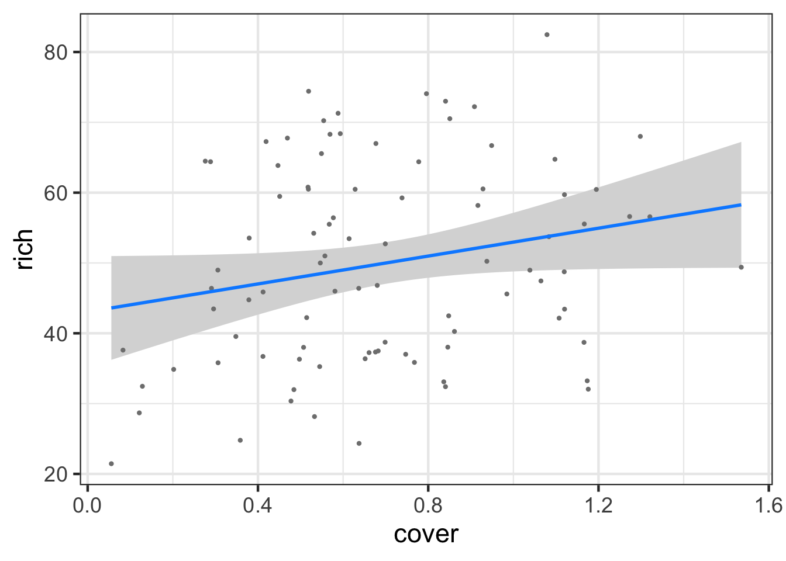

Multiple linear regression is conceptually very similar to simple linear regression, but we need to be mindful of parsing apart the contribution of each predictor. Let’s use the keeley fire severity plant richness data to see it in action.
For our purposes, we’ll focus on fire severity and plant cover as predictors.
1.1 Visualizing
I’m not going to lie, visualizing multiple continuous variables is as much of an art as a science. One can use colors and sizes of points, or slice up the data into chunks and facet that. Here are a few examples.
Note, this uses refit as the default method, where it basically refits the entire model with z-transformed parameters. You can use method = "basic" for simple models as well. Refit is nice, though, for more complex models. Just make sure you know what R is doing!
And then the R2
r2(keeley_mlr)
# R2 for Linear Regression
R2: 0.170
adj. R2: 0.151
Not amazing fit, but, the coefficients are clearly different from 0.
1.4 Visualization
This is where things get sticky. We have two main approaches. First, visualizing with component + residual plots
crPlots(keeley_mlr, smooth=FALSE)
But the values on the y axis are….odd. We get a sense of what’s going on and the scatter after accounting for our predictor of interest, but we might want to look at, say, evaluation of a variable at the mean of the other.
For that, we have visreg
library(visreg)visreg(keeley_mlr, gg =TRUE)
[[1]]
[[2]]

Now the axes make far more sense, and we have a sense of the relationship.
1.5 Counterfactual Plots and Advanced Visualization
We can actually whip this up on our own using the median of each value, and broom::augment().
Or, we can use modelr to explore the model and combine that exploration with the data. Let’s get the curve for cover at four levels of fire severity. We’ll use both modelr::data_grid and broom::augment for a nice easy workflow.
Let’s go through some faded examples from data from the Data4Ecologists package.
pacman::p_load_gh("jfieberg/Data4Ecologists")
First, here’s that keeley analysis again.
# Load the datadata(keeley)# Perform a preliminary visualization keeley |>select(cover, distance, hetero) |> GGally::ggpairs()# Fit a MLR modelcover_mod <-lm(cover ~ distance + hetero, data = keeley)# Test Assumptions and modify model if neededcheck_model(cover_mod)# Evaluate resultstidy(cover_mod)# Visualize resultsvisreg(cover_mod)
# Load the datadata(RIKZdat)# Perform a preliminary visualization RIKZdat |>select(Richness, NAP, humus) |> GGally::_____()# Fit a MLR modelrikz_mod <-lm(Richness ~ NAP + humus, data = RIKZdat)# Test Assumptions and modify model if needed_____(rikz_mod)# Evaluate resultstidy(_____)# Visualize results_____(rikz_mod)
# Load the datadata(Kelp)# Perform a preliminary visualization Kelp |> ____::_____()# Fit a MLR modelkelp_mod <-lm(Response ~ OD + BD + LTD + W, data = Kelp)# Test Assumptions and modify model if needed_____(______)# Evaluate results_____(_____)# Visualize results_____(kelp_mod)
2. Categorical Predictors
Comparing means are among the most frequently used tests in data analysis. Traditionally, they were done as a T-test or ANOVA, but, really, these are just subsets of linear models. So, why not fit the appropriate linear model, and go from there! They’re delightfully simple, and provide a robust example of how to examine the entire workflow of a data analysis. These are steps you’ll take with any analysis you do in the future, no matter how complex the model!
For two means, we want to fit a model where our categorical variable is translated into 0s and 1s. That corresponds to the following model:
\[y_i = \beta_0 + \beta_1 x_i + \epsilon_i\]
Here, \(\beta_0\) corresponds to the mean for the group that is coded as 0 and \(\beta_1\) is the difference between the two groups. If \(\beta_1\) is different than 0, then the two groups are different, under a frequentist framework.
For many categories, we just extend this framework for
\[y_i = \beta_0 + \sum^K_{j = 1} \beta_j x_{ij} + \epsilon_i\] where now we have a reference group and then we look at the deviation from that reference for each other level of the category.
To see how this works with many categories, as comparing two means is just a simple subset of this analysis, let’s look at the dataset 15e1KneesWhoSayNight.csv about an experiment to help resolve jetlag by having people shine lights at different parts of themselves to try and shift their internal clocks.
Note that now we have an intercept and two 0/1 variables!
2.2 Assumption Evaluation
Because this is an lm, we can check our assumptions as before - with one new one. First, some oldies but goodies.
check_model(knees_lm)
Looks good! You can of course dig into individual plots and assumptions as above, bot, broadly, this seems good.
2.3 Evaluating Model Results
So, there are a lot of things we can do with a fit model
2.3.1 Summary Output
summary(knees_lm)
Call:
lm(formula = shift ~ treatment, data = knees)
Residuals:
Min 1Q Median 3Q Max
-1.27857 -0.36125 0.03857 0.61147 1.06571
Coefficients:
Estimate Std. Error t value Pr(>|t|)
(Intercept) -0.30875 0.24888 -1.241 0.22988
treatmenteyes -1.24268 0.36433 -3.411 0.00293 **
treatmentknee -0.02696 0.36433 -0.074 0.94178
---
Signif. codes: 0 '***' 0.001 '**' 0.01 '*' 0.05 '.' 0.1 ' ' 1
Residual standard error: 0.7039 on 19 degrees of freedom
Multiple R-squared: 0.4342, Adjusted R-squared: 0.3746
F-statistic: 7.289 on 2 and 19 DF, p-value: 0.004472
First, notice that we get the same information as a linear regression - including \(R^2\) This is great, and we can see about 43% of the variation in the data is associated with the treatments. We also get coefficients, but, what do they mean?
Well, they are the treatment contrasts. Not super useful. R fits a model where treatment 1 is the intercept, and then we look at deviations from that initial treatment as your other coefficients. It’s efficient, but, hard to make sense of. To not get an intercept term, you can refit the model without the intercept. You can fit a whole new model with -1 in the model formulation.
knees_lm_no_int <-update(knees_lm, formula = . ~ . -1)summary(knees_lm_no_int)
Call:
lm(formula = shift ~ treatment - 1, data = knees)
Residuals:
Min 1Q Median 3Q Max
-1.27857 -0.36125 0.03857 0.61147 1.06571
Coefficients:
Estimate Std. Error t value Pr(>|t|)
treatmentcontrol -0.3087 0.2489 -1.241 0.230
treatmenteyes -1.5514 0.2661 -5.831 1.29e-05 ***
treatmentknee -0.3357 0.2661 -1.262 0.222
---
Signif. codes: 0 '***' 0.001 '**' 0.01 '*' 0.05 '.' 0.1 ' ' 1
Residual standard error: 0.7039 on 19 degrees of freedom
Multiple R-squared: 0.6615, Adjusted R-squared: 0.6081
F-statistic: 12.38 on 3 and 19 DF, p-value: 0.0001021
OK - that makes more sense. But, ugh, who wants to remember that. Instead, we can see treatment means using the emmeans package yet again.
This is great! But I’d argue, there are some more fun and interesting ways to look at this. The ggdist package and ggridges can create some interesting visualizations with additional information.
For example, from ggridges
library(ggridges)ggplot(data = knees,mapping =aes(x = shift, y = treatment)) +stat_density_ridges()
This might be too vague - or it might be great in terms of seeing overlap. ggdist combined a few different elements. I’m a big fan of geom_halfeye as you get a density and mean and CI.
These densities are more based on the data, and a lot of this provides a clearer cleaner visualization. There are a lot of other interesting elements of ggdist that are worth exploring
But, as an exercise why not visit the ggdist webpage and try and come up with the most interesting visualization of the knees project that you can!
2.3.2 A Priori Planned Contrasts
If you have a priori contrasts, you can use the constrat library to test them. You give contrast an a list and a b list. Then we get all comparisons of a v. b, in order. It’s not great syntactically, but, it lets you do some pretty creative things.
contrast::contrast(knees_lm, a =list(treatment ="control"), b =list(treatment ="eyes"))
lm model parameter contrast
Contrast S.E. Lower Upper t df Pr(>|t|)
1 1.242679 0.3643283 0.4801306 2.005227 3.41 19 0.0029
2.3.3 Unplanned pairwise comparisons
Meh. 9 times out of 10 we want to do compare all possible levels of a categorical variable and look at which differences have cofidence intervals that contain 0. We can use our emmeans object here along with the contrast() function and confint(). Note, by default, confidence intervals will be adjusted using the Tukey method of adjustment.
contrast estimate SE df lower.CL upper.CL
control - eyes 1.243 0.364 19 0.317 2.168
control - knee 0.027 0.364 19 -0.899 0.953
eyes - knee -1.216 0.376 19 -2.172 -0.260
Confidence level used: 0.95
Conf-level adjustment: tukey method for comparing a family of 3 estimates
We don’t need to worry about many of the fancier things that emmeans does for the moment - those will become more useful with other models. But, we can look at this test a few different ways. First, we can visualize it
contrast(knees_em,method ="pairwise") |>plot() +geom_vline(xintercept =0, color ="red", lty=2)
We can also, using our tukey method of adjustment, get “groups” - i.e., see which groups are likely the same versus different.
library(multcomp)cld(knees_em, adjust="tukey")
treatment emmean SE df lower.CL upper.CL .group
eyes -1.551 0.266 19 -2.25 -0.855 1
knee -0.336 0.266 19 -1.03 0.361 2
control -0.309 0.249 19 -0.96 0.343 2
Confidence level used: 0.95
Conf-level adjustment: sidak method for 3 estimates
P value adjustment: tukey method for comparing a family of 3 estimates
significance level used: alpha = 0.05
NOTE: If two or more means share the same grouping symbol,
then we cannot show them to be different.
But we also did not show them to be the same.
This can be very useful in plotting. For example, we can use that output as a data frame for a ggplot in a few different ways.
knees_expanded <-left_join(knees, cld(knees_em, adjust="tukey"))ggplot(knees_expanded,aes(x = treatment, y = shift, color = .group)) +geom_point()
Comparing to a Control
We can similarly use this to look at a Dunnett’s test, which compares against the control
contrast(knees_em,method ="dunnett") |>confint()
contrast estimate SE df lower.CL upper.CL
eyes - control -1.243 0.364 19 -2.118 -0.367
knee - control -0.027 0.364 19 -0.903 0.849
Confidence level used: 0.95
Conf-level adjustment: dunnettx method for 2 estimates
Note, if the “control” had not been the first treatment, you can either re-order the factor using forcats or just specify which of the levels is the control. For example, eyes is the second treatment. Let’s make it our new reference.